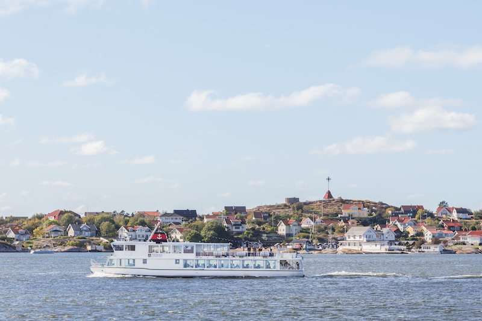

Social Dinner: Boat Cruise around Hisingen
Cruise Schedule: Tuesday 12 June
- 18:00 Departure from Lilla Bommen (city center)
- 22:00 Arrival in Lilla Bommen
 The four hour boat cruise around the island of Hisingen will include a dinner and a guided tour. The cruise will pass through the Gothenburg's archipelago, as well as the rivers Göta älv and Nordre älv.